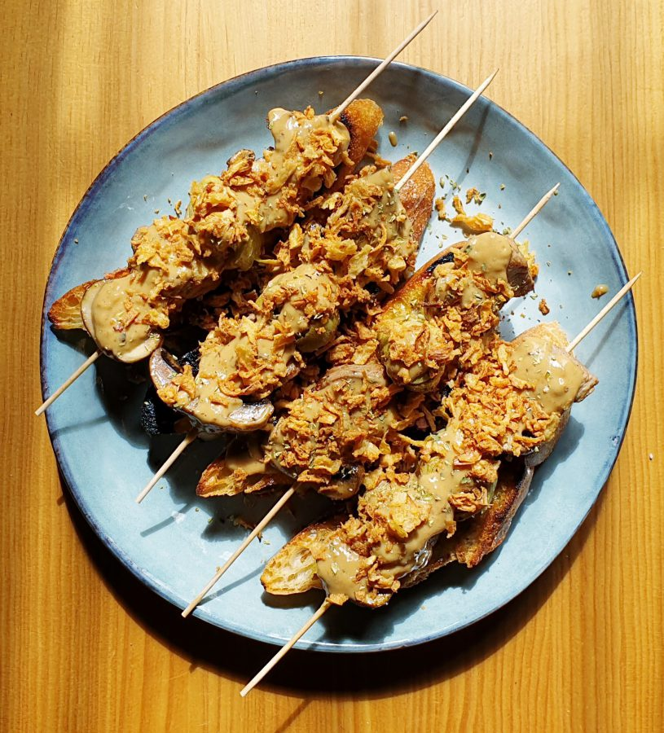

Brochetas de presa ibérica con champiñón Portobello
Para estas brochetas nos hemos decantado por dos productos únicos como es la presa ibérica y los champiñones Portobello.

Ingredientes
- 1 Presa ibérica
- 1 bandeja Champiñón Portobello 250 g
- 1 Cebolleta
- 100 ml Caldo de carne
- 100 ml Nata para Montar
- 20 ml Whisky
- 1 cucharadita Harina
- Aceite de oliva virgen extra
- sal
- Pimienta
- Cebolla frita
- Tomillo fresco